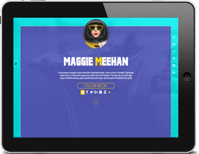
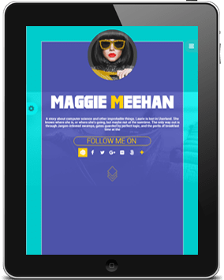
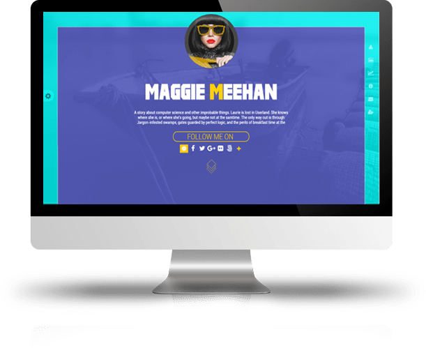
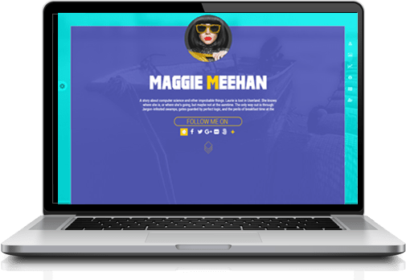

X
<
>
X
<
>
This is user Profile section on megashots.net V2. It is equivalent to an "About" section on other social media sites such as Facebook. This profile (About) section however is very feature rich and what is more interesting is the fact that this whole section is automatically generated. Lets say if a user is on the site and after a month or so they discovered this page, it would be fully populated with data. Here, users can see that their profile is already connected to all social media sites where they may have a presence. The social media connections that they had established on their Timeline or Portfolio are reflected here as well. Here, they can edit or add more connections if they feel the need to do so. Visitors can click on any social icon and and follow them on the related site. Further down, there are links to user Professional Portfolio, favorite Youtube videos and user Shop. Scrolling down, visitor is able to choose to view user's latest uploads, user's most favorite photos, Awarded photos, Most liked photos, user's Collections and most loved photos in 5 different categories and all time based. Among other functionalities on this page, there is an analytics section which shows statistics of the visitors to the page, unique and aggregated. Finally, user can change template and further customize the template they have chosen to use.